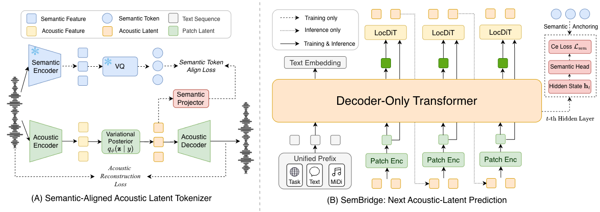

ASLP @ NPU / Soul AI Lab
SemBridge
Semantic-Token Anchoring for
Continuous-Latent Autoregressive Speech Generation
Speech. Singing. One continuous voice.
太好了，我们终于成功了！今晚一定要好好庆祝一下！
The framework
Semantics as an anchor.
Sound as a continuum.
SemBridge brings explicit semantic supervision to continuous-latent speech generation. Semantic tokens guide learning; inference generates entirely continuous acoustic latents.
Abstract
Continuous-latent autoregressive speech generation has emerged as a promising alternative to discrete-token modeling by avoiding quantization loss and preserving richer acoustic information. However, continuous acoustic targets do not expose linguistic structure as explicit token-level prediction targets. Consequently, the autoregressive language model (LM) must acquire linguistic structure indirectly through acoustic prediction, which can compromise the content fidelity of generated speech. We propose SemBridge, a training-only semantic-token anchoring framework for continuous-latent autoregressive speech generation. SemBridge uses discrete semantic tokens to directly supervise autoregressive LM states and employs a Semantic-Aligned Acoustic VAE to organize the continuous target space under the same semantic reference. The semantic supervision is used only during training, while inference remains entirely continuous. We evaluate SemBridge on zero-shot text-to-speech (TTS) and score-conditioned singing voice synthesis (SVS). Across multiple benchmarks, SemBridge improves content accuracy, as measured by word and character error rates (WER/CER), while maintaining competitive speaker similarity and perceptual quality. Experimental results demonstrate that explicit semantic-token supervision for autoregressive state learning is an effective and general direction for continuous speech generation.

Align the acoustics
SA-VAE aligns acoustic latents with a shared semantic reference.
Anchor the hidden states
Discrete semantic labels supervise the autoregressive model during training.
Keep generation continuous
Speech and singing emerge as a sequence of continuous acoustic patches.
01 / Speech
A voice. A world of expression.
Each sample conditions on a short reference recording and generates the target text in the prompt speaker's voice.
Expressive TTS
Emotion-rich prompts transfer speaking style while preserving the requested content.
Character and celebrity voices
Selected zero-shot samples from distinctive character and public-figure prompts.
Chinese
English
Narrative voices
Selected zero-shot samples spanning historical, documentary, wuxia, dramatic, and nature narration.
Chinese
No samples in this language.
02 / Singing
Give the words a melody.
SemBridge generates singing from lyrics, MIDI pitch, note duration, and a short singer prompt.
03 / Unified
From speaking to singing.
And back again.
A single autoregressive sequence alternates between speech and score-conditioned singing while preserving a shared acoustic trajectory.
ZH · U001 《像我这样的人》
接下来，送给大家一段《像我这样的人》，也送给每一个还在认真生活的人。
像我这样孤单的人，像我这样傻的人。
这一句，也许唱的就是我们自己。愿每一个认真生活的人，都能被世界温柔看见。
ZH · U002 《彩虹》
夜深了，送给大家一段《彩虹》，也送给那个让我一直牵挂的人。
看不见你的笑，我怎么睡得着。
愿这段旋律陪你入梦，我们下次再见。
ZH · U003 Happiness
今天心情特别好，先不多说了，给大家唱一句关于幸福的歌。
幸福开始有预兆。
原来幸福真的会提前打招呼，今天的好心情也分享给你。
ZH · U004 《隐形的翅膀》
各位观众，俺老孙今天也来唱上一段《隐形的翅膀》，听好了！
我看见每天的夕阳，也会有变化。
这一曲唱罢，多谢大家捧场，俺老孙先走一步！
@article{xie2026sembridge,
title = {SemBridge: Semantic Token Anchoring for Continuous-Latent Autoregressive Speech Generation},
author = {Hanke Xie and Haopeng Lin and Jiale Qian and
Dake Guo and Yuepeng Jiang and Zhichao Wang and
Wenxiao Cao and Jingbin Hu and Guobin Ma and
Wenhao Li and Huakang Chen and Chengyou Wang and
Ming Tao and Zhonghua Fu and Lei Xie and Xinsheng Wang},
journal = {arXiv preprint arXiv:2608.07462},
year = {2026},
eprint = {2608.07462},
archivePrefix = {arXiv},
primaryClass = {eess.AS},
url = {https://arxiv.org/abs/2608.07462}
}